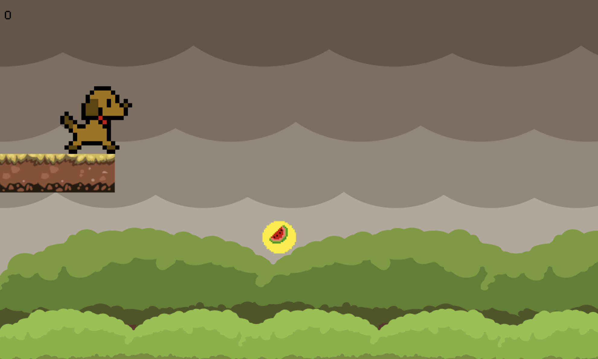

Mathurah Ravigulan 💻
🎮 Fellow at Girls Make Games
During the summer of 2019, I travelled to Seattle and completed a fellowship with Girls Make Games at Xbox. Through my role, I led a team of 4 girls aged 9-11 to build a fun animal platformer game within 3 weeks. Check out our game here.
Game development has always been interesting to me! In my spare time, I brainstorm branching stories on Episode Interactive and sketch out designs for characters. I got involved after learning about the Google Change the Game Design Challenge in 2018 and submitted some of my work. I was highlighted as an honourable mention out of several submissions from all over North America.
This was an awesome experience not only getting the chance to go to the West Coast for the first time but being able to inspire young girls and reduce the gender gap in the gaming industry is amazing. This was a great chance for me to give back as a mentor for these girls who are already changing the game.
🤔 What I learned:
🔍 The importance of accessibility and focusing on the end user
Digital products like games are used by a range of people, as young as five or six years-old. It's incredible how game designers and console developers were able to ergonomically create a product that lets anyone play.

💬 Communication
Technology is hard. Some kids were so new to computers they didn't know how to right click. My role as a mentor was to introduce them to technology in a positive light and foster an environment that inspired innovation. Patience and communication were key. I had to make using game engine simple for kids and break instructions down. I needed to realize I'm not explaining things to myself and think about learning in a new perspective. Empathy was important to make game development fun for kids. At the end of the camp, I was so proud my students were excited to code again and continue their journey in technology.
🤩 Product management and leadership
Building a game out within 3 weeks is no easy feat. These 7 year-olds are very ambitious with their ideas. Saying no to them was one one of the hardest things to do, because they want to believe anything is possible. In reality, some things just can't be achieved in so little time. I gained product management skills by leading the ideation stage, setting a scope for the project, and setting milestones for the game to complete it in time. I also had to ensure my girls were motivated. - Dealing with bugs at such a young age is not fun, especially when some bugs caused them to lose all their work. I learned essential leadership skills and encouraged my team when times were tough.

These girls are changing the game! I learned that accessible game design is something I'd love to explore in the future.💯